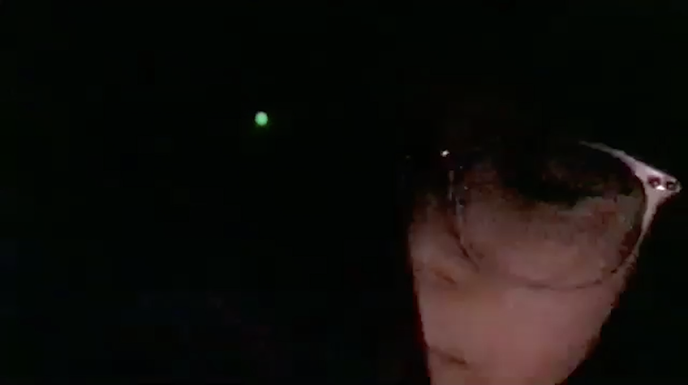
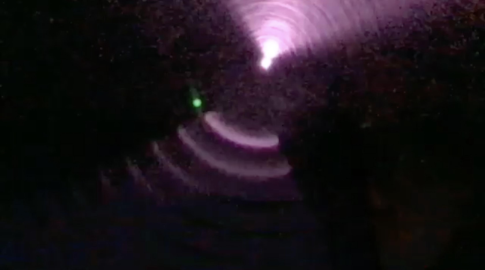
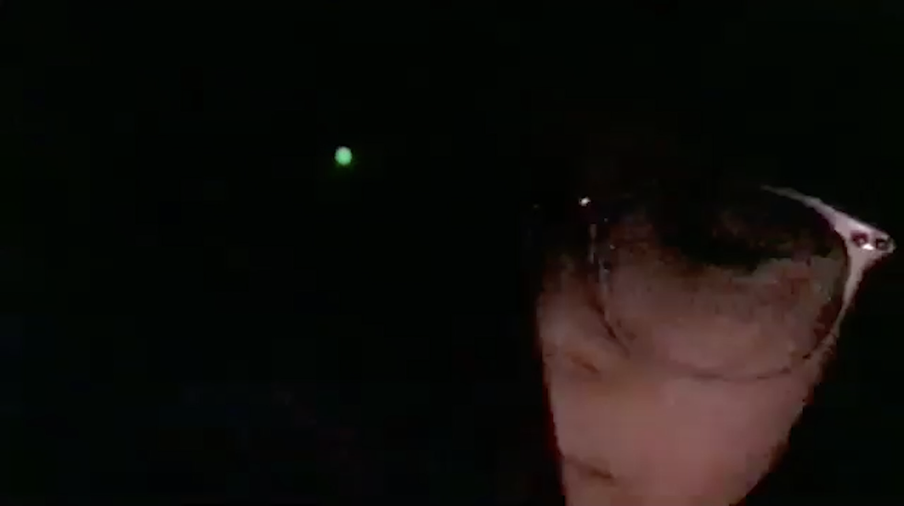
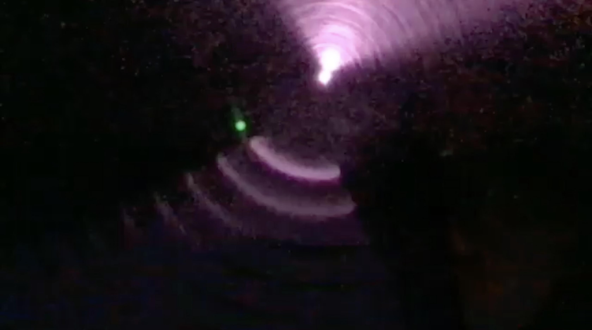
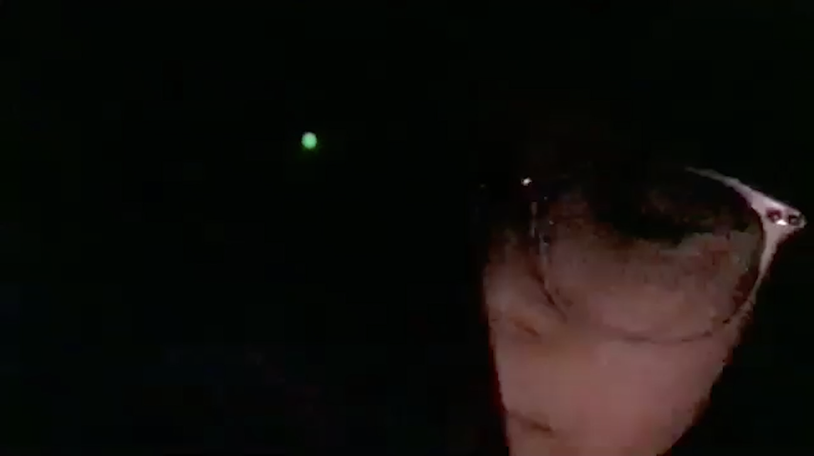
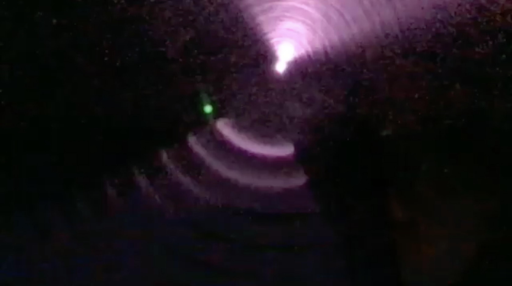
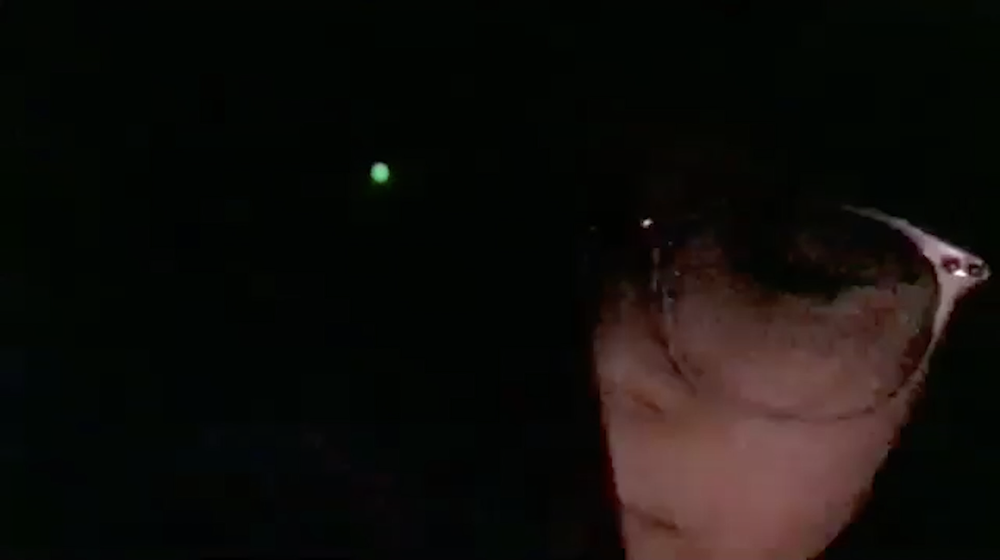
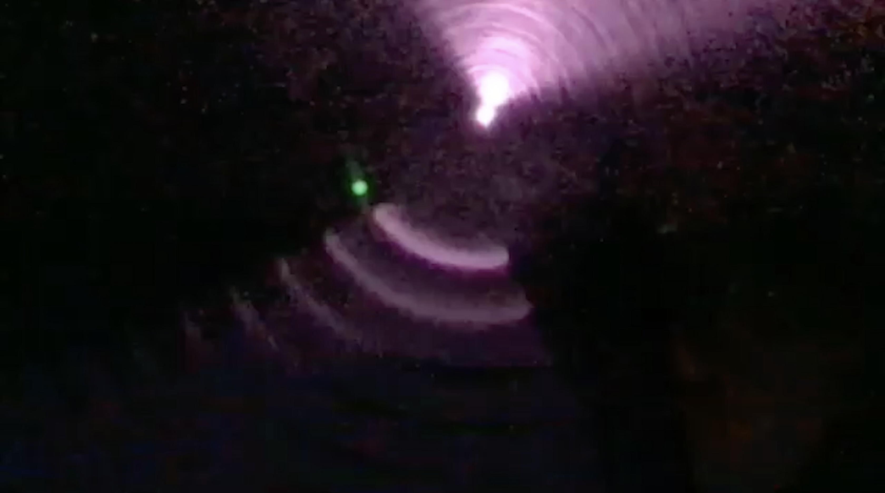

* Warning: strobe light effect
Screenings:
This video documents in real time as one camera sensor looks into another. It is live documentation without editing, forming feedback loops in both visual and audio. Using the internet and the ZOOM web-conference software, I “Zoom-called” myself using two machines (phone and computer) that could initiate a video call with both their cameras and microphones.
The green dot and the pink flickering lights are camera sensor lights, shown only when two cameras interact with one another. The cameras also capture my own face, shown on both screens. It is a study: signals sent through the internet produce flickering lights and sounds while vibrating with my fingers touching the phone-screen as well as vibrating with my own voice. It is like yelling towards the internet's black hole – thus the title "singing into the virtual private network". The other sound track is a sonification synthesis of the video signal, made with jit.peek patch on Max/Jitter.